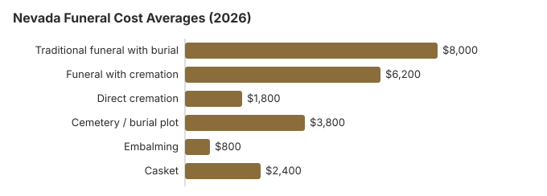

Funeral Costs in Nevada: What Families Pay in 2026
Nevada Funeral Prices by Item
Individual prices in Nevada still vary by provider, and the Nevada Funeral and Cemetery Services Board licenses Nevada homes without setting their prices.
| Service | Average Cost | Range |
|---|---|---|
| Traditional funeral with burial | $8,000 | $6,000 – $10,400 |
| Funeral with cremation | $6,200 | $4,960 – $8,060 |
| Direct cremation | $1,800 | $1,260 – $2,520 |
| Cemetery / burial plot | $3,800 | $1,900 – $7,600 |
| Embalming | $800 | $500 – $1,500 |
| Casket | $2,400 | $800 – $6,400 |
Methodology note: These figures are our estimates, not a survey of local providers, and they are not a quote or professional advice. See how we calculate them or read the full disclaimer.

Cremation vs. Burial in Nevada
Cremation
- Direct cremation from $1,800
- Cremation with service from $6,200
- No cemetery plot required
- More flexible memorial options
- Current rate: 72% of families
Traditional Burial
- Traditional service from $8,000
- Cemetery plot from $3,800
- Vault or liner typically required
- Permanent memorial location
- Metal casket: about $2,500 national median (NFDA 2023 General Price List Study); Nevada prices vary by seller
What the Law Guarantees You in Nevada
If you believe a funeral home in Nevada has violated these rights, you can file a complaint with the FTC at ftc.gov or contact the Funeral Consumers Alliance for guidance.
What's Specific to Nevada (West)
Nevada's high cremation rate has reshaped its funeral home market: full-service traditional funerals are less than half of all arrangements here, so providers who still do many traditional services in Nevada tend to either cater to a specific community or compete aggressively on price. Ask each Nevada provider for its split of cremation versus burial work when comparing; it predicts pricing posture in a state where 72% of families choose cremation.
Why Funeral Prices Vary in Nevada
Funeral costs in Nevada are influenced by several factors.
The cost of living in Nevada, local competition among funeral providers, state regulations, cultural traditions, and real estate prices all play a role in determining what families pay. The cremation rate of 72% in Nevada also affects the market: areas with higher cremation rates often see more competitive pricing for cremation services.
Other Nevada Guides on This Site
For deeper analysis on specific disposition types in Nevada, see our dedicated guides:
Cremation Costs in Nevada
Complete guide to cremation pricing in Nevada including direct cremation from $1,800, cremation with service from $6,200, urn options, scattering regulations, and memorial alternatives. The cremation rate in Nevada is 72%.
Burial Costs in Nevada
Detailed breakdown of burial expenses in Nevada including cemetery plots from $3,800, caskets, vaults, headstones, and opening/closing fees. Total burial costs in Nevada range from $18,120 to $22,620.
Nevada Funeral Costs by City
Funeral costs vary across Nevada's major metropolitan areas. Here are the major cities in Nevada:
Hidden Funeral Fees in Nevada: What to Watch For
Many Nevada families are surprised by charges that appear after the initial quote.
- Be wary of an embalming charge presented as required: in Nevada it almost never is.
Where Nevada Families Can Find Money for a Funeral
- Nevada county commissioners must provide or order a decent burial or cremation for an eligible indigent person and may pay the reasonable cost (NRS 428.090).
- Funeral homes in Nevada usually report the death to Social Security, but the $255 lump sum still has to be claimed by the spouse or child (1-800-772-1213, within two years).
- Whoever paid for a veteran's funeral in Nevada can file VA Form 21P-530EZ; for a death on or after October 1, 2026 that was not service-connected, VA pays up to $1,032 toward burial and $1,032 toward a plot (see our veteran burial benefits guide).
- More options for Nevada families, including Medicaid and charity help, are in our funeral payment assistance guide and how to pay for a funeral with no money.
Educational Resources
- Funeral Consumers AllianceIndependent nonprofit consumer advocacy for funeral rights
- FTC Funeral RuleThe federal rule protecting funeral consumers
- Funeral Insurance GuideCompare final expense and burial insurance options
- Best Burial Insurance CompaniesSide-by-side comparison of top burial insurance providers
- Payment Assistance GuideGovernment programs and financial help for funeral costs
- Insurance Plan ComparisonCompare coverage, premiums, and payout speed across providers
Compare Funeral Costs
- Average Funeral Cost in 2026National cost breakdown with real prices
- Cremation vs. Burial Cost ComparisonSide-by-side price comparison to help you decide
- Funeral Cost BreakdownEvery line item explained: know what you're paying for
- Cheapest Funeral OptionsLower-cost alternatives, with typical price ranges
- Direct Cremation: Most Affordable OptionNFDA 2023 median $2,645 with a family-supplied container (latest available)
- How to Compare Funeral PricesStep-by-step guide to getting the best price
The Least Expensive Ways to Hold a Funeral in Nevada
| Option | Estimated Cost | What's Included |
|---|---|---|
| Direct cremation | $1,800 | Cremation with no viewing or service; Nevada needs a permit but sets no fixed wait (NRS 451.660). |
| Direct burial | $4,000 | Burial soon after death without embalming or viewing; the Nevada cemetery charges for the plot and opening separately. |
| Green burial | $4,400 | Natural burial without embalming or a vault, where a Nevada cemetery permits it. |
| Cremation + memorial | $6,200 | Cremation followed by a separate memorial service |
| Traditional funeral | $8,000 | Full service with viewing, ceremony, and burial |
What to Do When Planning a Funeral in Nevada
If you are currently arranging a funeral in Nevada, here is a step-by-step approach that can save you time, stress, and money:
- Decide on disposition: cremation in Nevada or burial in Nevada.
Funeral rules and help in Nevada
If a funeral home in Nevada refuses to show prices or pressures you, the licensing body is the Nevada Funeral and Cemetery Services Board, reachable at 775-825-5535.
Hiring a funeral home is a choice, not a legal requirement, for most steps of a funeral in Nevada; the Funeral Consumers Alliance does not count Nevada among the nine states with funeral-director rules, and you can buy only the services you want.
For families comparing a funeral with cremation, note that Nevada sets no fixed waiting period before cremation, but a permit is needed first (NRS 451.660).
Under NRS 428.090, when an eligible indigent person dies, the Nevada board of county commissioners must provide or order a decent burial or cremation and may pay the reasonable cost; county programs such as Washoe County's Human Services Agency set residency and income rules. (Source: NRS 428.090.) Social Security's one-time $255 death payment, paid only to a qualifying spouse or child, is small next to the $8,000 average Nevada funeral in the table.
Nevada's state-run veterans cemeteries, Northern Nevada Veterans Memorial Cemetery (775-575-4441) or Southern Nevada Veterans Memorial Cemetery (702-486-5920), take requests directly, and the VA supplies the veteran's headstone or marker there at no charge. Elko National Cemetery is not yet open, so a Nevada veteran's funeral usually ends at the state cemetery in Boulder City or Fernley.
Next steps for a funeral in Nevada
- Compare at least two Nevada funeral homes line by line, using their printed price lists.
- Consider a Nevada memorial service after cremation or burial, which avoids embalming and viewing fees.
- Apply to the Nevada county social services agency before a funeral is arranged; residency and income rules apply.
- For a veteran, price Southern Nevada Veterans Memorial Cemetery against a private Nevada plot before choosing.
- Keep the board's number, 775-825-5535, in case a funeral home will not honor its price list.
Frequently Asked Questions
What is the average price of a funeral in Nevada right now?
Current averages in Nevada come in at $8,000 for a traditional funeral, $6,200 for cremation with a service, and from $1,800 for direct cremation, with the traditional figure sitting near the $8,300 US median. Cemetery and burial fees add roughly $3,800 when a Nevada family chooses burial.
Is cremation cheaper than burial in Nevada?
In Nevada, direct cremation at $1,800 costs about $6,200 less than the $8,000 traditional funeral, and roughly $10,000 less once about $3,800 in cemetery costs is added.
What rights do Nevada families have when arranging a funeral?
Nevada keeps its rules on the dead in NRS chapter 451. NRS 451.020 requires burial or cremation within a reasonable time, and once a body is cremated the remains may be carried without a permit and disposed of in any manner. NRS 451.024 sets the order of who controls disposition, starting with a person the decedent named in writing. The FTC Funeral Rule adds the itemized General Price List and phone quotes. To check a license or lodge a complaint, call the Nevada Funeral and Cemetery Services Board at 775-825-5535.
How do I keep funeral costs down in Nevada?
Three moves cut the most: compare at least three Nevada General Price Lists side by side before choosing a provider, strip packages down to only the services you actually want, and choose direct cremation ($1,800) if cost is the priority. Conservation burial grounds and hybrid cemetery sections in Nevada typically cost 30-50% less than traditional plots in the same cemetery.
Does Nevada require embalming?
No. NRS 451.065 bars crematories, funeral homes and cemeteries from requiring embalming before burial, cremation or transport. Only the State Board of Health can require it to protect the public, and the Funeral and Cemetery Services Board can approve embalming after a body has been held 72 hours if no family member can be reached.
Outside those cases it is the family's call, and the roughly $800 Nevada figure on this page can stay off the bill. Questions about an unapproved charge go to that same board at 775-825-5535.
Is Nevada cheaper or more expensive than the US average for funerals?
Compare the Nevada figures in the cost table on this page with the national median of $8,300 for a funeral with viewing and burial, or $6,280 with cremation (NFDA 2023). Individual Nevada funeral homes can sit well above or below the state figure, so get several price lists.
Which funeral option costs the least in Nevada?
Direct cremation carries the lowest price tag in Nevada, from roughly $1,800. Direct burial is the next step up at about $4,000, which is $4,000 below a traditional Nevada funeral.
How can I find affordable funeral homes in Nevada?
Ask at least three Nevada providers for their General Price Lists and compare direct cremation and immediate burial lines. Buying the casket or urn elsewhere is allowed under the FTC Funeral Rule, and the Nevada home cannot charge a fee for it.